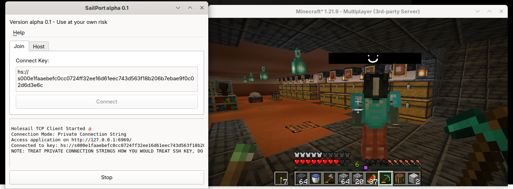
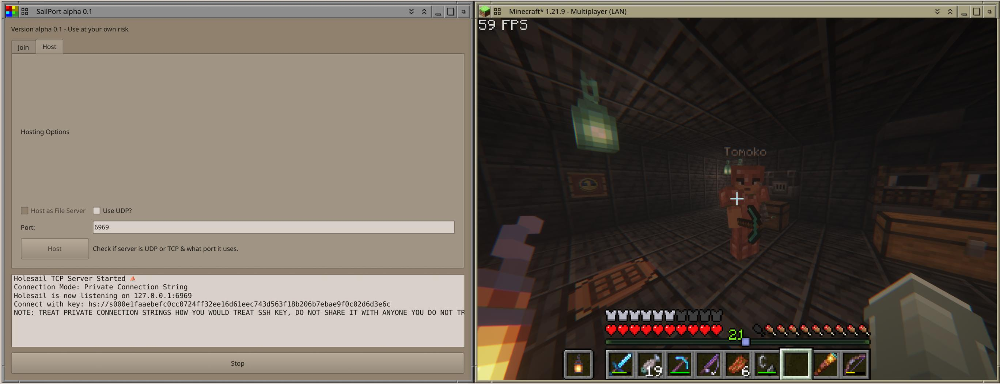

This was a very quick and dirty GUI for Holesail which is a small P2P util (not by me).
It allows you to connect to other computers via a DHT + UDP hole punching.
The motivation was that since holesail is kind of cute and perfect for small video game servers, and I wanted friends
to play with (who were not use to a CLI), so I decided to make this.


Holesail(so by extension sailport) isn't really ready to be used for serious things (such as ssh). There is no authentication besides if a peer has the same key. This means that the key is the only secret. Its more of a shared secret model then a proper peer auth. Someone could easily share your key with untrusted parties. So you really, really shouldn't use this for anything serious. At most temporary game servers are... probably fine, as long as you trust your friends.